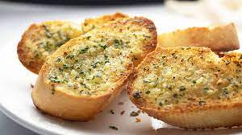

Garlic Bread

Garlic bread consists of bread, topped with garlic and olive oil or butter and may include additional herbs, such
as oregano or chives. It is then either grilled until toasted or baked in a conventional or bread oven.
Ingredients
- 16-ounce (450 g) loaf Italian bread or French bread
- 1/2 cup (1 stick, 112 g) unsalted butter, softened
- 2 large cloves garlic, smashed and minced
- 1 heaping tablespoon chopped fresh parsley
- 1/4 cup (25 g) freshly grated Parmesan cheese (optional)
Steps
- Preheat oven to 350°F
- Cut the loaf in half, horizontally. Mix the butter, garlic, and parsley together in a small bowl. Spread
butter mixture over the the two bread halves.
- Place on a sturdy baking pan (one that can handle high temperatures, not a cookie sheet) and heat in a 350°F
(175°C) oven for 10 minutes.
- Remove pan from oven. Sprinkle Parmesan cheese over bread if you want. Return to oven on the highest rack.
Broil on high heat for 2-3 minutes until the edges of the bread begin to toast and the cheese (if you are
using cheese) bubbles. Watch very carefully while broiling. The bread can easily go from un-toasted to
burnt.
- Remove from oven, let cool a minute. Remove from pan and use a bread knife to cut into 1-inch thick slices.
Serve immediately.